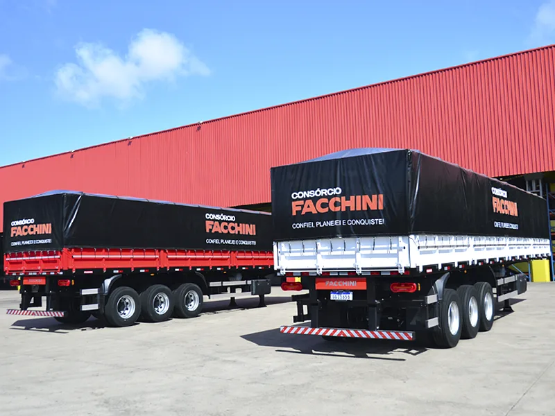

MODELO
Semirreboque Graneleiro

Produto destinado ao transporte de cereais a granel, como soja, milho, arroz, feijão, com descarga rápida através de bocas de escoamento ou por plataforma basculante.
* Este equipamento está sujeito a alterações de suas características técnicas sem notificação prévia.
| DESCRIÇÕES |
| CHASSI |
-
Longarinas: Vigas perfil "I" aço de alta resistência mecânica.
-
Travessas: Passantes perfil "C" aço ASTM A36 interligando as longarinas por solda robotizada.
-
Corrimãos: Perfil lateral "C" aço LNE 38.
-
Pino Rei: Flangeado 2" | NBR NM ISO 337|2001.
|
| SUSPENSÃO |
Sistema: 4 eixos, sendo o 1º eixo distanciado direcional com suspensão pneumática; 2º, 3º e 4º eixos com suspensão mecânica, tipo balancim, com suportes de molas estampados; molas semielípticas; balanças em aço USI SAC 350, articuladas em buchas de poliuretano, que dispensam lubrificação; apoio das molas do tipo troca rápida; braços tensores articulados em buchas de borracha. |
| SUPORTE VERTICAL |
Mecânico de 2 velocidades, capacidade de levantamento de 28 t e carga estática de 60 t. |
| PINTURA |
-
Limpeza com desengraxante e fosfatizante químico.
-
Base: Aplicação de fundo anticorrosivo.
-
Acabamento: Pintura em PU. Ferragens das tampas com pintura eletroestática a pó, cor branca.
|
| SISTEMA RODANTE |
-
Eixos: Tubulares com diãmetro de 152 mm, capacidade 11 t.
-
Freios: A ar, com ABS, duas linhas: serviço e emergência, tambor 16 ½" x 8".
-
Rodagem: Cubos lisos em ferro fundido nodular para rodas 8,25 x 22,5.
|
| ACESSÓRIOS |
-
Suporte estepe para dois pneus;
-
Caixa plástica de cozinha;
-
Caixa plástica de ferramentas;
-
Corote plástico de água;
-
Para-lamas de plástico e para-barros de borracha;
-
Arcos para vinilona;
-
Vinilona;
-
Tira fina no painel frontal inferior e tira fina nas tampas laterais e traseira inferior e superior;
-
Suspensor pneumático no 1º e 2º eixos.
-
Itens normatizados do CONTRAN:
-
Para-choque | Resolução | 952|22;
-
Faixas refletivas | Resolução 948|22;
-
Protetores laterais | Resolução 953|22.
|